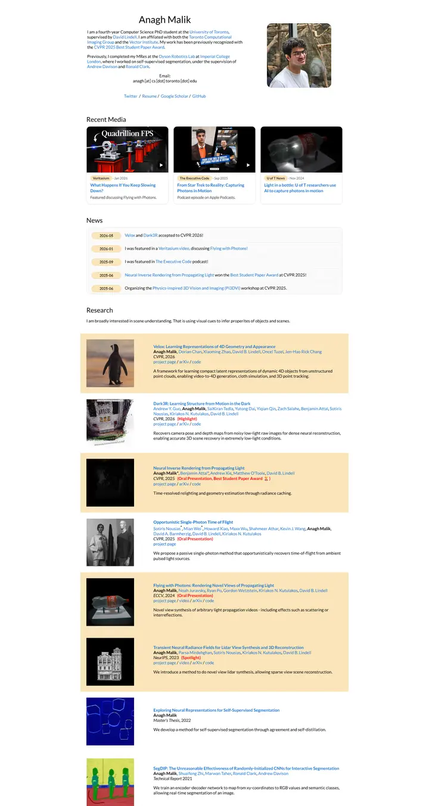
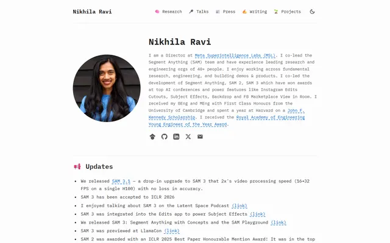

Anagh Malik
The Barron table, warmed with apricot: Lato at 14px, blue links that flash orange, and the papers that matter sitting in a band of late-afternoon light.

Checked against the rendered page.
Why it is here
Barron-style list given its own identity, with warm highlighted rows for key papers and a media card strip.
Overview
Color Palette
Typography
Lato
Anagh Malik, computational imaging, neural rendering
Abstract · Method · Results · BibTeX — 0123456789
Spacing & Shape
Page Modules
Guidelines
More like this

Lionel (Lio) Wong
A Swiss-grotesk index card pinned to the left edge: a squat black wordmark, a grainy black-and-white portrait hung in the margin, and research questions boxed in thin black frames.

Nikhila Ravi
A developer's zine on off-white paper: everything in IBM Plex Mono, emoji for signposts, blue links on dashed underlines.

Amir Bar
A clean faculty prospectus in Imperial blue: Inter on white, pill links, and paper cards that lift a few pixels when you reach for them.

Christoph Feichtenhofer
A conference-hall banner in Facebook blue, then a long ledger of papers in red ink, green venues and justified grey abstracts.

David B. Lindell
A lab notebook typeset by a careful editor: Source Serif prose, Source Sans labels, one clear blue, and every paper filed with its photograph.

David Novotny
A harbour at dusk beside a quiet reading room: a fixed teal-to-midnight panel with right-aligned contact lines, and soft grey text with tangerine links on white.